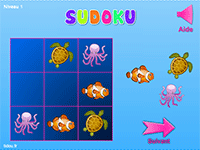
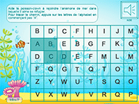

here are some games for fun to your child
Interactive Sudoku game: marine animals
Look at the grid and drag the right images into the right boxes. Attention, in each column and in each line, the images must be different

Online puzzles, fruits
Tidou offers 7 puzzles online with fruit images: watermelon, pineapple, banana, apple, strawberry, pear and grape.
How to play: Drag the pieces of the puzzle onto the gray shadow of the fruit. You will hear a sound if the room is well positioned. Rotate your touch pad if you do not see the buttons at the bottom of the puzzle
Alphabet Labyrinth Online
Turns alphabet and alphabetic learning into fun with this sound game.
Press the first letter of the alphabet then the second and so on to help the clownfish join the sea anemone

Maze game online, the plane
The plane is lost in a labyrinth, help him to reach the airport.
How to play: Use the arrow keys on the keyboard or the game buttons if you use a touch device

Sound Memory Game, The Alphabet
The memory game is a great way to learn to recognize the 26 letters of the alphabet and their sound. It has 4 modes: learning, easy, normal and difficult.
How to play: The goal of memory games is to return two identical cards. For this, locate the location of the cards.
By clicking on "Learn", you will be able to see the letters of the alphabet and choose one to hear its name.
Sound Memory Game, Numbers
This memory game aims to teach the numbers from 0 to 20 to kids in a fun way. It has 4 modes: learning, easy, normal and difficult.
How to play: The goal of memory games is to return two identical cards. For this, locate the location of the cards.
By clicking on "Learn", you will be able to see the numbers and choose one to hear its name
The little world of the pond
This sound game will allow you to learn the names of the animals that populate the pond.
How to play: Drag the different elements on the image to reconstruct the scene
Online coloring by pixel
Pixel art is a game that allows drawing and coloring online on gridlines. Imagine a drawing and color it online or use the proposed models.
How to play: Choose a color by clicking on the palette. Click on the "model" button if you want to copy a drawing. Use the white color to erase